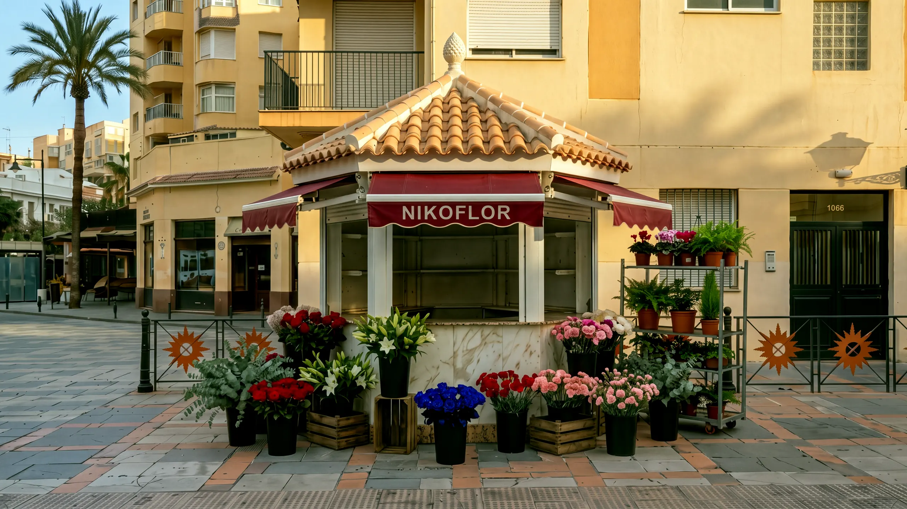

- A las nueve y media, el quiosco está vacío.
- Primero salen las cajas.
- Luego, flor por flor.
- Después, las plantas.
- Las azules son la firma.
- A las diez, ya es Nikoflor.
[Foto del dueño: un ramo terminado, en la mano, a la luz del día — pendiente]
Hecho a mano, con respeto por cada flor.
[Foto del dueño: un ramo saliendo del quiosco — pendiente]
Lo llevamos a casa. Normalmente, mañana.
